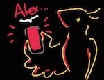

Juneau
2015
A simple website where a person types in their name and their phone whispers it back to them. The whisper is my own voice and hundreds of names have been recorded. A pulsating red light flashes across the phone screen while a script runs to keep
the phone awake until it dies or the website is closed. I had a demo in class where everyone's phones were placed in plastic bags hanging from the walls and it looked very nice and embryonic in the dark. I hope to tweak this and use this with large
groups of people in the future.
juneau.io